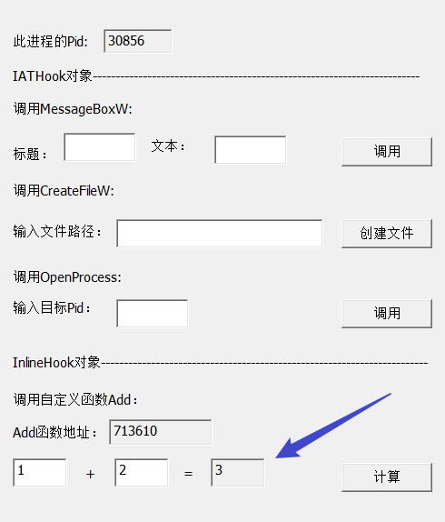

# 项目要求
1、使用内存写入的方式，实现模块隐藏.
2、IAT 表中有的 API 使用 IAT Hook 实现 不在 IAT 表的使用 Inline Hook 实现
3、将监控的 API 参数写入到文件中
4、进程间通信方式自己选择，有创新最好
5、所有的 HOOK 能够正常卸载，不能导致进程意外结束.
# 代码实现
有一段时间没有用 Win32 实现 GUI 了，顺便复习一下。
# 创建监控程序的对话框
在 WinMain 中添加创建对话框代码并画一个界面：
// 创建 Dialog 对话框 | |
DialogBox(hInstance, MAKEINTRESOURCE(IDD_DIALOG_MAIN), NULL, DialogProc); |
在对话框的处理函数中添加各个按钮的相应代码：
BOOL CALLBACK DialogProc(HWND hwndDlg, UINT uMsg, WPARAM wParam, LPARAM lParam) | |
{ | |
switch (uMsg) | |
{ | |
case WM_CLOSE: | |
EndDialog(hwndDlg, 0); | |
return TRUE; | |
case WM_COMMAND: | |
switch (LOWORD(wParam)) | |
{ | |
case IDC_INJECT: | |
MessageBox(0, L"IDC_INJECT", 0, 0); | |
return TRUE; | |
case IDC_LOG: | |
MessageBox(0, L"IDC_LOG", 0, 0); | |
return TRUE; | |
case IDC_MBox1: | |
MessageBox(0, L"IDC_MBox1", 0, 0); | |
return TRUE; | |
case IDC_MBox2: | |
MessageBox(0, L"IDC_MBox2", 0, 0); | |
return TRUE; | |
case IDC_CFile1: | |
MessageBox(0, L"IDC_CFile1", 0, 0); | |
return TRUE; | |
case IDC_CFile2: | |
MessageBox(0, L"IDC_CFile2", 0, 0); | |
return TRUE; | |
case IDC_Opro1: | |
MessageBox(0, L"IDC_Opro1", 0, 0); | |
return TRUE; | |
case IDC_Opro2: | |
MessageBox(0, L"IDC_Opro2", 0, 0); | |
return TRUE; | |
case IDC_Add1: | |
MessageBox(0, L"IDC_Add1", 0, 0); | |
return TRUE; | |
case IDC_Add2: | |
MessageBox(0, L"IDC_Add2", 0, 0); | |
return TRUE; | |
} | |
default: | |
break; | |
} | |
return FALSE; | |
} |
我这里就先用 MessAgeBox 代替了。后面再实现各个按钮的相应代码。
接下来编写理想化的被监控程序。
# 编写被监控的程序
这个我就直接使用 MFC 编写了，大致界面如下：
接下来实现其功能。
# 显示自己的 Pid
添加一个函数，在对话框初始化的时候调用。
void CMonitoredProgramDlg::ShowPid() | |
{ | |
// TODO: 在此处添加实现代码. | |
// | |
// 获取进程自身的 PID | |
HANDLE hSnapshot = CreateToolhelp32Snapshot(TH32CS_SNAPPROCESS, 0); | |
if (INVALID_HANDLE_VALUE == hSnapshot) | |
{ | |
return ; | |
} | |
PROCESSENTRY32 pi; | |
pi.dwSize = sizeof(PROCESSENTRY32); // 第一次使用必须初始化成员 | |
BOOL bRet = Process32First(hSnapshot, &pi); | |
while (bRet) | |
{ | |
if (_tcscmp(_T("MonitoredProgram.exe"), pi.szExeFile) == 0) | |
{ | |
CString Pid; | |
Pid.Format(_T("%d"), pi.th32ProcessID); | |
::SetDlgItemText(GetSafeHwnd(), IDC_PID, Pid); | |
break; | |
} | |
bRet = Process32Next(hSnapshot, &pi); | |
} | |
CloseHandle(hSnapshot); | |
} |
截图：
# 实现调用 MessageBoxW 功能
添加按钮的处理函数：
void CMonitoredProgramDlg::OnBnClickedButton1() | |
{ | |
// TODO: 在此添加控件通知处理程序代码 | |
// 获取 标题和文本 编辑框内容 | |
CString CTitle, CText; | |
::GetDlgItemText(GetSafeHwnd(), IDC_Title, CTitle.GetBuffer(), 256); | |
::GetDlgItemText(GetSafeHwnd(), IDC_Text, CText.GetBuffer(), 256); | |
// 调用 MessageBoxW | |
MessageBoxW(CText.GetBuffer(), CTitle.GetBuffer()); | |
} |
截图：
# 实现调用 CreateFileW 功能
添加按钮的处理函数：
void CMonitoredProgramDlg::OnBnClickedFile() | |
{ | |
// TODO: 在此添加控件通知处理程序代码 | |
// 获取路径 | |
CString CPath; | |
::GetDlgItemText(GetSafeHwnd(), IDC_Path, CPath.GetBuffer(), 256); | |
CreateFileW( | |
CPath.GetBuffer(), | |
GENERIC_READ | GENERIC_WRITE, | |
NULL, NULL, | |
OPEN_ALWAYS, // 始终创建一个新文件 | |
FILE_ATTRIBUTE_NORMAL, // 文件最常用的默认值 | |
NULL | |
); | |
} |
截图：
# 实现调用 OpenProcess 功能
要打开另一个进程的句柄并获得完全访问权限，必须启用 SeDebugPrivilege 权限，所以就随便一个权限了。
添加按钮的处理函数：
void CMonitoredProgramDlg::OnBnClickedOpen() | |
{ | |
HANDLE hProcess = NULL; | |
// 获取目标进程 PID | |
CString CPid; | |
::GetDlgItemText(GetSafeHwnd(), IDC_TPid, CPid.GetBuffer(), 256); | |
hProcess = OpenProcess(PROCESS_QUERY_LIMITED_INFORMATION, FALSE, _ttoi(CPid.GetBuffer())); | |
return; | |
} |
截图：
# 实现调用 Add 函数功能
添加 Add 函数并添加获取 Add 函数地址的函数：
int CMonitoredProgramDlg::Add(int a, int b) | |
{ | |
// 故意定义一个局部变量 | |
int c = a + b; | |
return c; | |
} | |
void CMonitoredProgramDlg::ShowFuncAddress() | |
{ | |
CString FuncAddress; | |
FuncAddress.Format(_T("%X"), &CMonitoredProgramDlg::Add); | |
::SetDlgItemText(GetSafeHwnd(), IDC_FuncAddress, FuncAddress.GetBuffer()); | |
} |
添加按钮的处理函数：
void CMonitoredProgramDlg::OnBnClickedCalc() | |
{ | |
// TODO: 在此添加控件通知处理程序代码 | |
// 获取 加数 | |
CString CAdd1, CAdd2, CResult; | |
::GetDlgItemText(GetSafeHwnd(), IDC_ADD1, CAdd1.GetBuffer(), 256); | |
::GetDlgItemText(GetSafeHwnd(), IDC_ADD2, CAdd2.GetBuffer(), 256); | |
CResult.Format(_T("%d"), Add(_ttoi(CAdd1.GetBuffer()), _ttoi(CAdd2.GetBuffer()))); | |
::SetDlgItemText(GetSafeHwnd(), IDC_Result, CResult.GetBuffer()); | |
} |
截图：

至此，被监控程序已经写完了。
开始编写监控程序。
# 实现监控程序的功能
如何实现监控程序是一个问题。
如何与被注入到目标进程的模块通信是一个问题，我打算用共享内存进行通信，并为共享内存定义结构：
typedef struct _Communication { | |
// 函数地址 | |
DWORD definedAddress; | |
// 安装 / 卸载 Hook | |
struct | |
{ | |
// 安装 / 卸载 Hook MessageBoxW | |
BOOL bHookMsgW : 1; | |
// 安装 / 卸载 Hook CreateFileW | |
BOOL bHookCfw : 1; | |
// 安装 / 卸载 Hook OpenProcess | |
BOOL bOp : 1; | |
// 安装 / 卸载 Hook 自定义函数 | |
BOOL bDefined : 1; | |
}isHook; | |
// 远程调用函数 | |
struct | |
{ | |
BOOL bCallMsgW : 1; | |
BOOL bCallCfw : 1; | |
BOOL bCallOp : 1; | |
BOOL bCallDefined : 1; | |
}isCall; | |
}Communication,*PCommunication; |
首先在监控程序中申请一块 _Communication 大小的共享内存，并初始化它，这一步，在注入的函数中实现。
先设计监控端的下发命令的操控代码：
BOOL HookMessageBoxW(HWND hwndDlg) | |
{ | |
// 变化按钮 | |
// 静态变量只初始化一次 | |
static BOOL isHook = FALSE; | |
// 获取按钮句柄 | |
HWND hButton = GetDlgItem(hwndDlg, IDC_MBox1); | |
if (isHook) | |
{ | |
// 利用共享内存通信，通知 dll 去卸载 Hook MessageBoxW | |
pCommMemory->isHook.bHookMsgW = 0; | |
// 已经卸载 Hook | |
isHook = FALSE; | |
SetWindowText(hButton, _T("开启监控")); | |
} | |
else | |
{ | |
// 利用共享内存通信，通知 dll 去卸载 Hook MessageBoxW | |
pCommMemory->isHook.bHookMsgW = 1; | |
// Hook 已开启 | |
isHook = TRUE; | |
SetWindowText(hButton, _T("关闭监控")); | |
} | |
return 0; | |
} | |
BOOL HookCreateFileW(HWND hwndDlg) | |
{ | |
// 变化按钮 | |
// 静态变量只初始化一次 | |
static BOOL isHook = FALSE; | |
// 获取按钮句柄 | |
HWND hButton = GetDlgItem(hwndDlg, IDC_CFile1); | |
if (isHook) | |
{ | |
pCommMemory->isHook.bHookCfw = 0; | |
// 已经卸载 Hook | |
isHook = FALSE; | |
SetWindowText(hButton, _T("开启监控")); | |
} | |
else | |
{ | |
pCommMemory->isHook.bHookCfw = 1; | |
// 开始 Hook | |
isHook = TRUE; | |
SetWindowText(hButton, _T("关闭监控")); | |
} | |
return 0; | |
} | |
BOOL HookOpenProcess(HWND hwndDlg) | |
{ | |
// 变化按钮 | |
// 静态变量只初始化一次 | |
static BOOL isHook = FALSE; | |
// 获取按钮句柄 | |
HWND hButton = GetDlgItem(hwndDlg, IDC_Opro1); | |
if (isHook) | |
{ | |
pCommMemory->isHook.bOp = 0; | |
// 已经卸载 Hook | |
isHook = FALSE; | |
SetWindowText(hButton, _T("开启监控")); | |
} | |
else | |
{ | |
pCommMemory->isHook.bOp = 1; | |
// 开始 Hook | |
isHook = TRUE; | |
SetWindowText(hButton, _T("关闭监控")); | |
} | |
return 0; | |
} | |
BOOL HookAdd(HWND hwndDlg) | |
{ | |
// 变化按钮 | |
// 静态变量只初始化一次 | |
static BOOL isHook = FALSE; | |
// 获取按钮句柄 | |
HWND hButton = GetDlgItem(hwndDlg, IDC_Add1); | |
if (isHook) | |
{ | |
pCommMemory->isHook.bDefined = 0; | |
// 已经卸载 Hook | |
isHook = FALSE; | |
SetWindowText(hButton, _T("开启监控")); | |
} | |
else | |
{ | |
pCommMemory->isHook.bDefined = 1; | |
// 开始 Hook | |
isHook = TRUE; | |
SetWindowText(hButton, _T("关闭监控")); | |
} | |
return 0; | |
} | |
BOOL RemoteCallMessageBoxW() | |
{ | |
// 通信 | |
pCommMemory->isCall.bCallMsgW = 1; | |
return 0; | |
} | |
BOOL RemoteCallCreateFileW() | |
{ | |
pCommMemory->isCall.bCallCfw = 1; | |
return 0; | |
} | |
BOOL RemoteCallOpenProcess() | |
{ | |
pCommMemory->isCall.bCallOp = 1; | |
return 0; | |
} | |
BOOL RemoteCallAdd() | |
{ | |
pCommMemory->isCall.bCallDefined = 1; | |
return 0; | |
} |
这是监控端下发 Hook 和 远程调用命令的实现。
然后接着搞实现内存注入模块了，涉及了 PE 操作，这个之前写过的，顺便复习一下了。
BOOL MemoryInject(DWORD dwPid) | |
{ | |
LPVOID pDllFileBuffer = NULL, pDllImageBuffer = NULL; | |
// 读取 DLL， | |
DWORD dwFileBufferSize = FileToMemory(DllName, &pDllFileBuffer); | |
// 拉伸为内存中的状态，并获取其内存中的大小 | |
DWORD dwSizeOfImage = FileBufferToImageBuffer(pDllFileBuffer, &pDllImageBuffer); | |
// 解析 PE 信息 | |
PIMAGE_DOS_HEADER pDosHeader = (PIMAGE_DOS_HEADER)pDllImageBuffer; | |
PIMAGE_NT_HEADERS pNTHeader = (PIMAGE_NT_HEADERS)((DWORD)pDosHeader + pDosHeader->e_lfanew); | |
PIMAGE_FILE_HEADER pPEHeader = (PIMAGE_FILE_HEADER)((DWORD)pDosHeader + pDosHeader->e_lfanew + 4); | |
PIMAGE_OPTIONAL_HEADER32 pOptionHeader = (PIMAGE_OPTIONAL_HEADER32)((DWORD)pPEHeader + sizeof(IMAGE_FILE_HEADER)); | |
// 在被监控的进程中申请 dll 内存状态大小的内存空间 | |
HANDLE hProcess = OpenProcess(PROCESS_ALL_ACCESS, FALSE, dwPid); | |
LPVOID pRemoteImageBase = VirtualAllocEx(hProcess, NULL, dwSizeOfImage, MEM_COMMIT, PAGE_EXECUTE_READWRITE); | |
if (NULL == pRemoteImageBase) | |
{ | |
//printf ("在目标进程申请内存失败，错误码: % d\n", GetLastError ()); | |
return; | |
} | |
// 修复 IAT | |
RepairIAT(pDllImageBuffer); | |
// 修复重定位表 | |
SetNewImageBase(pDllImageBuffer, (DWORD)pRemoteImageBase); | |
// 写入到被监控的进程中 | |
WriteProcessMemory(hProcess, pRemoteImageBase, pDllImageBuffer, dwSizeOfImage, NULL); | |
// 计算 dll 执行的 OEP | |
DWORD dwOEP = (DWORD)pRemoteImageBase + pOptionHeader->AddressOfEntryPoint; | |
// 创建远程线程，执行入口代码 | |
CreateRemoteThread(hProcess, NULL, NULL, (LPTHREAD_START_ROUTINE)dwOEP, NULL, NULL, NULL); | |
} |
最后就开始在 dll 中编写最核心的功能了。
# 编写 dll
因为我们在监控端里要创建远程线程去执行 dll 的入口函数，为了更好控制 dll 的入口函数，我们更改一下入口，在 dllmain 中这样写：
#pragma comment(linker, "/entry:\"Or0kit\"") // 指定程序入口函数为 Or0kit () | |
void Start() { | |
//TODO | |
} | |
void __declspec(naked) Or0kit() { | |
__asm sub esp, 0x50; // 提升堆栈，提高容错性。 | |
Start(); | |
__asm add esp, 0x50; | |
__asm retn; | |
} |
初始化 Start 函数：
void Start() { | |
//TODO | |
// 首先初始化共享内存 | |
g_hFileMap = CreateFileMapping(INVALID_HANDLE_VALUE, NULL, PAGE_READWRITE, 0, MapSize, MapName); | |
if (g_hFileMap == NULL) | |
{ | |
MessageBox(NULL, _T("创建共享内存失败"), _T("创建共享内存失败"), 0); | |
return ; | |
} | |
pCommMemory = (PCommunication)MapViewOfFile(g_hFileMap, FILE_MAP_ALL_ACCESS, 0, 0, MapSize); | |
if (pCommMemory == NULL) | |
{ | |
MessageBox(NULL, _T("MapViewOfFile 失败"), _T("MapViewOfFile 失败"), 0); | |
CloseHandle(g_hFileMap); | |
return ; | |
} | |
while (true) | |
{ | |
// Hook MessageBoxW | |
if (pCommMemory->isHook.bHookMsgW) | |
{ | |
// 判断是否已经 Hook | |
if (false) | |
{ | |
// Hook | |
} | |
} | |
else | |
{ | |
// 判断是否已经卸载 hook | |
if (true) | |
{ | |
// unload hook | |
} | |
} | |
// Hook CreateFileW | |
if (pCommMemory->isHook.bHookCfw) | |
{ | |
// 判断是否已经 Hook | |
if (false) | |
{ | |
// Hook | |
} | |
} | |
else | |
{ | |
// 判断是否已经卸载 hook | |
if (true) | |
{ | |
// unload hook | |
} | |
} | |
// Hook OpenProcess | |
if (pCommMemory->isHook.bOp) | |
{ | |
// 判断是否已经 Hook | |
if (false) | |
{ | |
// Hook | |
} | |
} | |
else | |
{ | |
// 判断是否已经卸载 hook | |
if (true) | |
{ | |
// unload hook | |
} | |
} | |
// Hook Add | |
if (pCommMemory->isHook.bDefined) | |
{ | |
// 判断是否已经 Hook | |
if (false) | |
{ | |
// Hook | |
} | |
} | |
else | |
{ | |
// 判断是否已经卸载 hook | |
if (true) | |
{ | |
// unload hook | |
} | |
} | |
// 远程调用 | |
if (pCommMemory->isCall.bCallMsgW) | |
{ | |
// 调用后把标志位置零 | |
pCommMemory->isCall.bCallMsgW = 0; | |
} | |
if (pCommMemory->isCall.bCallCfw) | |
{ | |
// 调用后把标志位置零 | |
pCommMemory->isCall.bCallCfw = 0; | |
} | |
if (pCommMemory->isCall.bCallOp) | |
{ | |
// 调用后把标志位置零 | |
pCommMemory->isCall.bCallOp = 0; | |
} | |
if (pCommMemory->isCall.bCallDefined) | |
{ | |
// 调用后把标志位置零 | |
pCommMemory->isCall.bCallDefined = 0; | |
} | |
} | |
} |
以我现在的水平，只能这样写了。
接下来就是实现 IAT HOOK 和 INLINE HOOK。
这个之前也有过练习，复习一下。